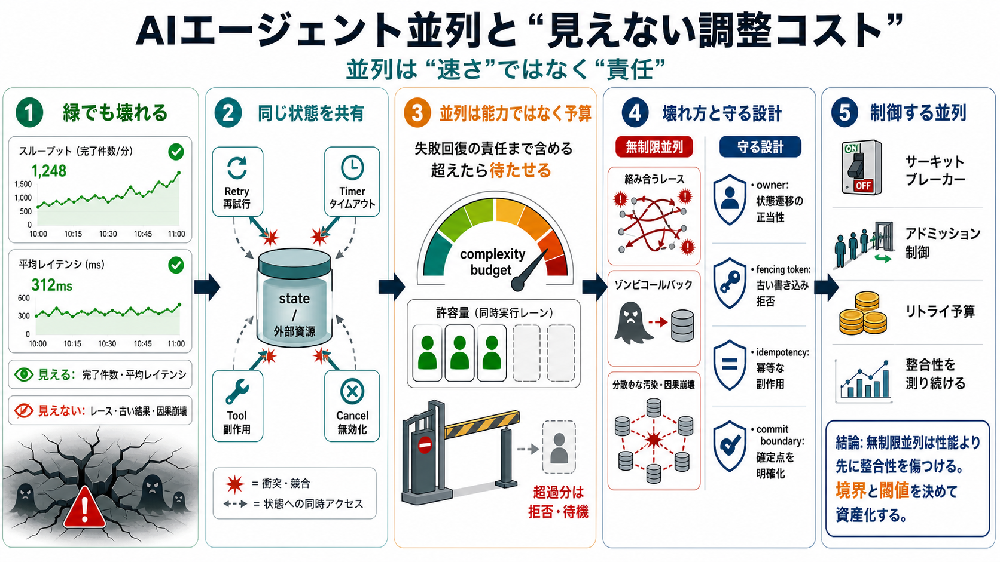

How does “il y a” translate to both “There is” and “ago” ...
Saying “il y a 10 jours” looks like “there is 10 days” how can “there is” also be taken to mean “ago” and turn the sente…

Saying “il y a 10 jours” looks like “there is 10 days” how can “there is” also be taken to mean “ago” and turn the sente…
It means you have checked something and confirmed its truth or accuracy using reliable methods. How can I use "I have ve…
I signed the contract three hours ago today after going through video identification process with a live agent. Everythi…
Just wanted to share an update in case this helps anyone. I spoke directly with the IRS today about identity verificati…
I'm subscribed to Creative Cloud since 2023 and receive the reduced monthly fee because of my education status.Just last…